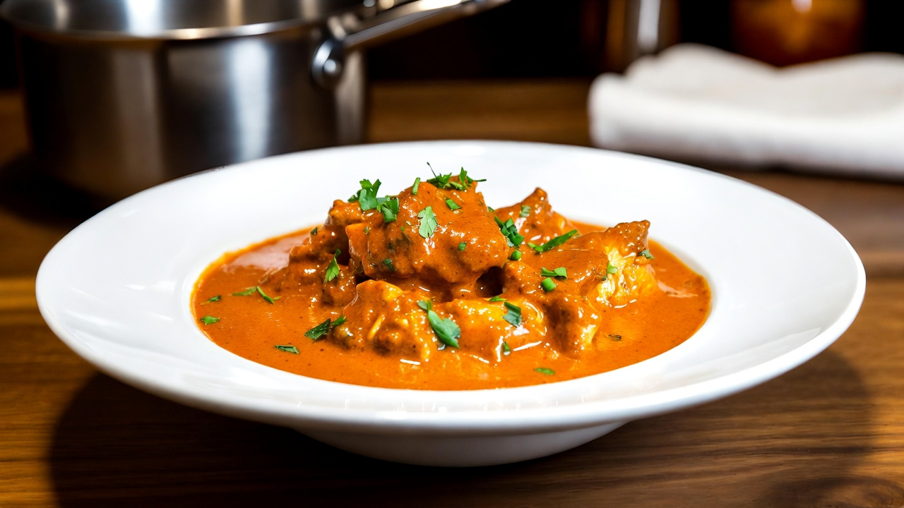

A Simple Butter Chicken Recipe

Description
Butter chicken is a creamy and mildly spiced Indian curry made with grilled or pan-fried chicken pieces simmered in a rich tomato-based gravy with butter and cream. The chicken is usually marinated in yogurt and spices, making it tender and flavorful.
This dish is loved for its smooth texture and balanced taste, combining tangy tomatoes, warm spices, and rich creaminess. It is best served with naan, roti, or steamed rice.
Ingredients
- Chicken (boneless)
- Yogurt (curd)
- Ginger-Garlic Paste
- Butter
- Oil
- Onions
- Tomatoes (pureed)
- Fresh Cream
- Kasuri Methi (dried fenugreek leaves)
- Salt
- Red Chili Powder
- Turmeric Powder
- Garam Masala
- Coriander Powder
Steps
- Marinate chicken with yogurt, ginger-garlic paste, chili powder, turmeric, salt, and garam masala for 30 minutes.
- Pan-fry or grill the chicken until lightly charred and cooked through.
- Heat butter and oil in a pan, sauté onions until golden.
- Add tomato puree and spices; cook until oil separates.
- Add cooked chicken and simmer for 5–7 minutes.
- Stir in cream and crushed kasuri methi.
- Adjust salt and serve hot.
Home